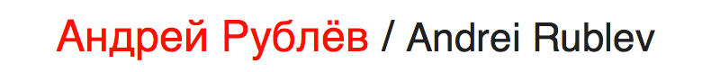
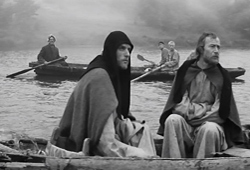
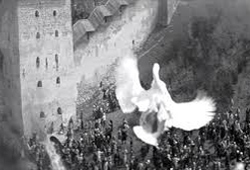
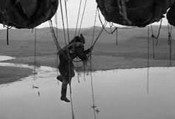
Andrei Rublev is a 1966 biographical historical drama film directed by Andrei Tarkovsky and co-written with Andrei Konchalovsky. The film was remade and re-edited from the 1966 film titled The Passion According to Andrei by Tarkovsky which was censored during the first decade of the Brezhnev era in the Soviet Union. The film is loosely based on the life of Andrei Rublev, the 15th-century Russian icon painter. The film features Anatoly Solonitsyn, Nikolai Grinko, Ivan Lapikov, Nikolai Sergeyev, Nikolai Burlyayev and Tarkovsky's wife Irma Raush. Savva Yamshchikov, a famous Russian restorer and art historian, was a scientific consultant of the film.
Andrei Rublev is set against the background of 15th-century Russia. Although the film is only loosely based on the life of Andrei Rublev, it seeks to depict a realistic portrait of medieval Russia. Tarkovsky sought to create a film that shows the artist as "a world-historic figure" and "Christianity as an axiom of Russia's historical identity" during a turbulent period of Russian history that ultimately resulted in the Tsardom of Russia. The film's themes include artistic freedom, religion, political ambiguity, autodidacticism, and the making of art under a repressive regime. Because of this, it was not released domestically in the officially atheist Soviet Union for years after it was completed, except for a single 1966 screening in Moscow. A version of the film was shown at the 1969 Cannes Film Festival, where it won the FIPRESCI prize. In 1971, a censored version of the film was released in the Soviet Union. The film was further cut for commercial reasons upon its U.S. release through Columbia Pictures in 1973. As a result, several versions of the film exist.
Although these issues with censorship obscured and truncated the film for many years following its release, the film was soon recognized by many western critics and film directors as a highly original and accomplished work. Even more since being restored to its original version, Andrei Rublev has come to be regarded as one of the greatest films of all time, and has often been ranked highly in both the Sight & Sound critics' and directors' polls.
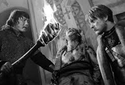
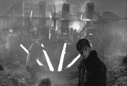
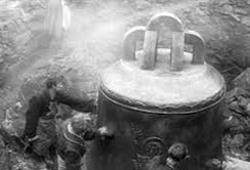
In 1961, while working on his first feature film Ivan's Childhood, Tarkovsky made a proposal to Mosfilm for a film on the life of Russia's greatest icon painter, Andrei Rublev. The contract was signed in 1962 and the first treatment was approved in December 1963. Tarkovsky and his co-screenwriter Andrei Konchalovsky worked for more than two years on the script, studying medieval writings and chronicles and books on medieval history and art. In April 1964 the script was approved and Tarkovsky began working on the film.
Tarkovsky cast Anatoli Solonitsyn, then an unknown actor at a theatre in Sverdlovsk, for the title role. According to Tarkovsky everybody had a different image of the historical figure of Andrei Rublev, thus casting an unknown actor would not remind viewers of other roles. Solonitsyn, who had read the film script in the film magazine Iskusstvo Kino, travelled to Moscow at his own expense to meet Tarkovsky and even declared that no one could play this role better than him. Tarkovsky felt the same, saying that "with Solonitsyn I simply got lucky". For the role of Andrei Rublev he required "a face with great expressive power in which one could see a demoniacal single-mindedness". To Tarkovsky, Solonitsyn provided the right physical appearance and the talent of showing complex psychological processes. Solonitsyn would continue to work with the director, appearing in Solaris, Mirror and Stalker, and in the title role of Tarkovsky's 1976 stage production of Hamlet in Moscow's Lenkom Theatre. Before his death from cancer in 1982, Solonitsyn was also intended to play protagonist Andrei Gortchakov in Tarkovsky's 1983 Italian-Russian co-production Nostalgia, and to star in a project titled The Witch which Tarkovsky would significantly alter into his final production, The Sacrifice.
Filming did not begin until April 1965, one year after approval of the script. The initial budget was 1.6 million Rubles, but it was cut several times to one million Rubles (In comparison, Sergei Bondarchuk's War and Peace had a budget of eight and half million Rubles). As a result of the budget restrictions several scenes from the script were cut, including an opening scene showing the Battle of Kulikovo. Other scenes that were cut from the script are a hunting scene, where the younger brother of the Grand Prince hunts swans, and a scene showing peasants helping Durochka giving birth to her Russian-Tatar child. In the end the film cost 1.3 million Rubles, with the cost overrun due to heavy snowfall, which disrupted shooting from November 1965 until April 1966. The film was shot on location, on the River Nerl and the historical sites of Vladimir/Suzdal, Pskov, Izborsk and Pechory. Tarkovsky chose to shoot the main film in black and white and the epilogue, showing some of Rublev's icons, in colour. In an interview he explained his choice with the claim that in everyday life one does not consciously notice colours. Consequently, Rublev's life is in black and white, whereas his art is in colour.
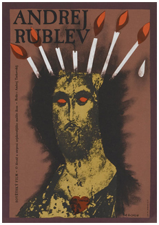
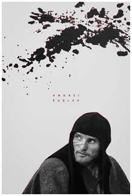
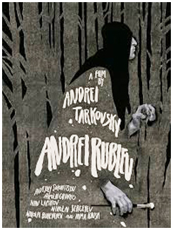
In a 1969 interview, Tarkovsky stated that the flying man in the prologue is "the symbol of daring, in the sense that creation requires from man the complete offering of his being. Whether one wishes to fly before it has become possible, or cast a bell without having learned how to do it, or paint an icon – all these acts demand that, for the price of his creation, man should die, dissolve himself in his work, give himself entirely."
The colour sequence of Rublev's icons begins with showing only selected details, climaxing in Rublev's most famous icon, The Trinity. One reason for including this colour final was, according to Tarkovsky, to give the viewer some rest and to allow him to detach himself from Rublev's life and to reflect. The film finally ends with the image of horses at river in the rain. To Tarkovsky horses symbolised life, and including horses in the final scene (and in many other scenes in the film) meant that life was the source of all of Rublev's art.
The first cut of the film was over 195 minutes in length prior to being edited down to its released length. The first cut was completed in July 1966. Goskino demanded cuts to the film, citing its length, negativity, violence, and nudity. After Tarkovsky completed this first version, it would be five years before the film was widely released in the Soviet Union. The ministry's demands for cuts first resulted in a 190-minute version. Despite Tarkovsky's objections expressed in a letter to Alexey Romanov, the chairman of Goskino, the ministry demanded further cuts, and Tarkovsky trimmed the length to 186 minutes.
Several scenes within the film depict violence, torture and cruelty toward animals, which sparked controversy at the time of release. Most of these scenes took place during the raid of Vladimir, including one showing the blinding and the torture of a monk. The scenes involving cruelty toward animals were largely simulated. For example, during the Tatar raid of Vladimir a cow is set on fire. In reality the cow had an asbestos-covered coat and was not physically harmed; however, one scene depicts the real death of a horse. The horse falls from a flight of stairs and is then stabbed by a spear. To produce this image, Tarkovsky injured the horse by shooting it in the neck and then pushed it from the stairs, causing the animal to falter and fall down the flight of stairs. From there, the camera pans off the horse onto some soldiers to the left and then pans back right onto the horse, and we see the horse struggling to get its footing having fallen over on its back before being stabbed by the spear. The animal was then shot in the head afterward off camera. This was done to avoid the possibility of harming what was considered a less expendable, highly prized stunt horse. The horse was brought in from a slaughterhouse, killed on set, and then returned to the abattoir for commercial consumption.
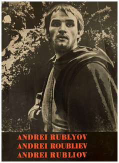
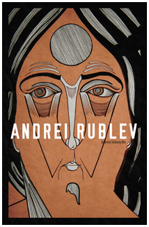
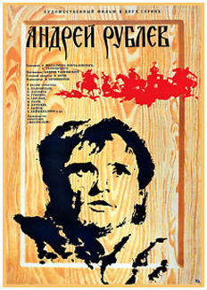
The film premiered with a single screening at the Dom Kino in Moscow in 1966. Audience reaction was enthusiastic, despite some criticism of the film's naturalistic depiction of violence. But the film failed to win approval for release from Soviet censors; the Central Committee of the Communist Party wrote in its review that "the film's ideological erroneousness is not open to doubt." and was accused of being "anti-historical" in its failure to portray the context of its hero's life: the rapid development of large cities and the struggle against the Mongols. In February 1967, Tarkovsky and Alexei Romanov complained that the film was not yet approved for a wide release but refused to cut further scenes from the film.
Andrei Rublev was invited to the Cannes Film Festival in 1967 as part of a planned retrospective of Soviet film on occasion of the 50th anniversary of the October Revolution. The official answer was that the film was not yet completed and could not be shown at the film festival. A second invitation was made by the organizers of the Cannes Film Festival in 1969. Soviet officials accepted this invitation, but they only allowed the film to screen at the festival out of competition, and it was screened just once at 4am on the final day of the festival. Audience response nevertheless was enthusiastic, and the film won the FIPRESCI prize. Soviet officials tried to prevent the official release of the film in France and other countries, but were not successful as the French distributor had legally acquired the rights in 1969. In the Soviet Union, influential admirers of Tarkovsky's work - including the film director Grigori Kozintsev, the composer Dmitri Shostakovich and Yevgeny Surkov, the editor of Iskusstvo Kino - began pressuring for the release of Andrei Rublev.
Andrei Rublev finally was released in Russia on 24 December 1971, in the 186-minute 1966 version. The film was released in 277 prints and sold 2.98 million tickets. When the film was released, Tarkovsky remarked in his diary that in the entire city not a single poster for the film could be seen but that all theaters were sold out.
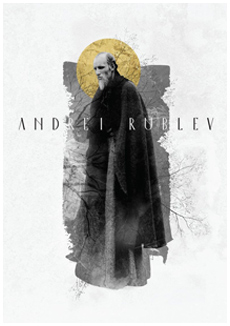
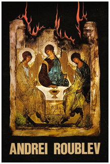
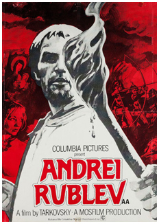